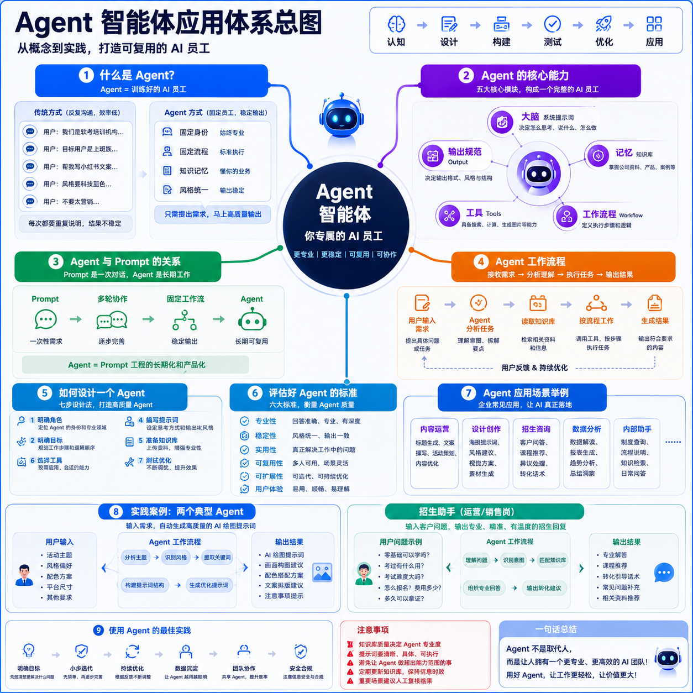

AI Agent
Agent 智能体应用
从“会聊天的 AI”升级为“能稳定工作的 AI 员工”，并用百炼平台完成两个实践项目。
海报设计提示词助手招生咨询助手百炼平台实践
大尊老师
从“会聊天的 AI”升级为“能稳定工作的 AI 员工”，并用百炼平台完成两个实践项目。

系统提示词：决定怎么思考。
知识库：决定懂什么。
工作流：决定先后顺序。
能力扩展：能做哪些事。
输出规范：结果长什么样。
重点不是“能不能回答”，而是“能不能按照固定流程稳定交付”。
核心定位：不是帮你画图，而是帮你把视觉需求讲清楚。
核心定位：不是机械回答，而是理解咨询背后的真实需求。
想让一个 Agent 什么都做，最后什么都不稳定。
不知道它到底是运营、设计还是销售。
只写身份，不写做事步骤。
不懂公司产品，只能泛泛回答。
每次输出样子都不一样，团队不好用。
上线前没有用真实问题反复测试。
不要追求一次做完，而是用真实工作不断修正它。
Agent 不是聊天机器人，而是可复用的 AI 岗位工具。先设计岗位，再写提示词；先明确流程，再接知识库；先稳定输出，再考虑复杂能力。